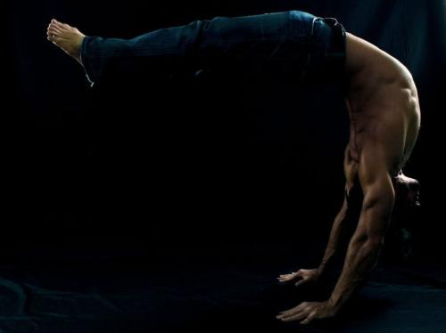
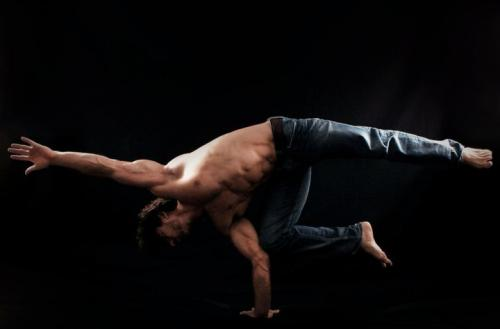
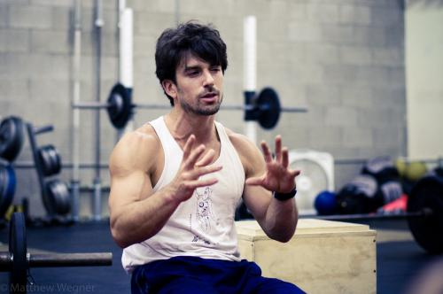

Три принципа Идо Портала

На Capoeira.Inside принято писать о великих мастерах и известных капуэйристах, но сегодня я расскажу совсем о другой птице. О птице даже не другого полёта, а скорее другого сорта, или отряда, если выражаться терминами орнитологии. Имя этой птицы Идо Портал (Ido Portal), и недавно я поучаствовал в очередном его семинаре, который прошёл в Шанхае.
Идо Портал — преподаватель и исследователь человеческих движений. Родом из Израиля, с более чем 15-летним опытом экстенсивных занятий капуэйрой, путешествует по всему миру и даёт семинары, на которых преподаёт теорию и практику движений. Его семинары посещают капуэйристы, акробаты и трикеры, паркуршики, различные гимнасты и атлеты, йоги, практиканты боевых искусств и танцоры различных направлений.
Его личность очень противоречивая и одиозная. Его можно сравнить с известным дизайнером Артемием Лебедевым, человеком определённо талантливым, имеющим своих почитателей и ярых противников. Идо любят и ненавидят иногда одни и те же люди, но все они признают его талант. Сам Идо, подобно Артемию, знает, что он лучший в своём роде и поэтому не боится говорить правду в лицо тем, кого он считает дилетантами. «Я наблевал на пол — возьми и съешь это, или наблюй своё, и если оно лучше, то я это съем» — любит повторять он.

Несколько лет назад Идо „дослужив“ до звания Professor в школе Cordão de Ouro (там он был известен, как Missionário, или просто Professor Ido) ушёл из капуэйры и начал усиленно работать над своей системой, которой так и не придумал названия. По началу то, чем он занимался называлось «Floreio art», но название не прижилось, т.к. это занятие охватывало намного больше того, что можно назвать «флорейо» в современной капуэйре.
Семинары Идо охватывают множество различных тем и аспектов: балансирование на руках, подготовка мышц и суставов, воздушная акробатика и биомеханика падения, разогрев, растяжка, питание и много другое. Он преподаёт по „химической модели“: у каждого законченного движения есть «атомы», которые объединяются в «молекулы», пока не превращаются в „материю“, а потом уже в «законченный продукт». Идо критикует преподавание «кусочками», которое особенно распространено среди молодых (и не всегда) учителей капуэйры. „Люди часто просто не знают, как научить тому или иному движению. Поэтому разбивают движение на «куски“, но как вы научите этому? [делает невообразимое сальто назад крутясь в двух осях] Поэтому я учу атомам движения»
На своих семинарах Идо беспощаден, строг и требователен. «YOU ARE WEAK!!!», постоянно повторяет он, поэтому для освоения каждого „атома“ он учит ещё и «электронам» — подготовке мышц и суставов для движения. Таким образом по системе Идо стойка на одной руке или QDR на одной руке — являются одними из атомов обязательных для освоения. Эти атомы дают свободу для цельных и больших движений в будущем. «Попробуйте покрутится на двух ногах, расставленных на ширине плеч. Трудно? А на одной ноге? Проще?! Вот это свобода, то же самое с QDR и бананейрой на одной руке». Впрочем сам Идо эти трюки называет не как иначе, как „дерьмом“ (bullshit). Для него куда важнее принципы, которые лежат за тем или иным движением, а также другие более сложные вещи. Идо критикует семинары других «известных капуэйристов» (а также йог, гимнастов и проч.) из-за того, что они «продают сосиски», а не учат, как их делать.
Тем не менее Идо не забывает о своих корнях: „Капуэйра — это то, откуда я пришёл и я всегда это буду помнить“. Идо отлично говорит (и поёт) по-португальски, жил в Бразилии, учился у многих мастеров (не только капуэйре, но и инструментам, истории, традиции), поэтому за невысокой, но широкой мускулистой фигурой атлета скрывается очень просвещённый человек и капуэйрист.

Если недалеко от вас будет проходить его семинар, обязательно посетите его. Возможно, вы даже не поиграете с ним в капуэйру, не сделаете и половины жинги, но вы получите очень важные знания для вашей игры, которые будете переваривать потом ещё очень долго. Самое главное — Идо независим, поэтому от него вы услышите очень много полезных вещей и много правды, которая, возможно, будет вам не по душе… Сам я не из тех, кто изучает капуэйру ради «красивых фишечек» и в данный момент больше стараюсь уделять внимание диалогу и другим вещам. Но на семинар пошёл, чтобы понять, как улучшить то, что уже имею. И это у меня получилось.
Статья называлась «Три принципа Идо Портала» и какие же они, спросите вы? В последние минуты нашего трёхдневного семинара Идо сказал:
— Ребята, запомните три главные вещи, которым я вас учил:
- Не писайте на мою ногу и не говорите при этом, что идёт дождь (Don't piss on my leg and tell me it's raining).
- Не пытайтесь напугать проститутку пенисом (Don't try to fright a hooker with a dick).
- Не ищите больше оправданий, чем беременная монашка (Don't have more excuses than a pregnant Nun).
***
Ссылки: официальный сайт Ido Portal, Facebook, блог